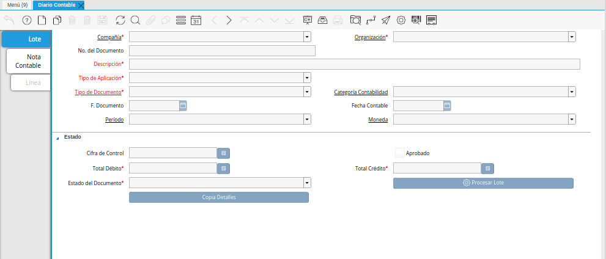
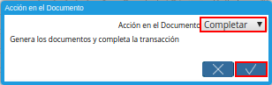
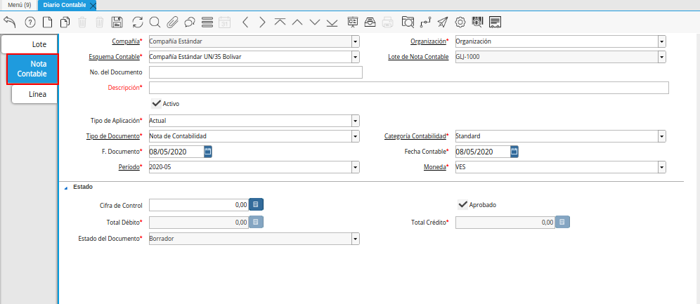
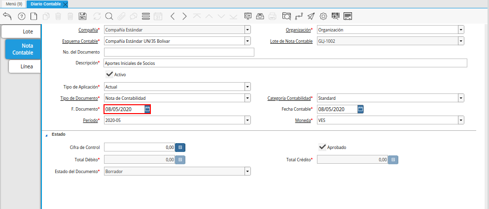
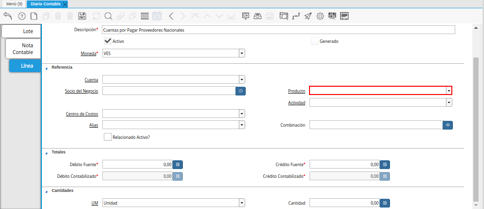
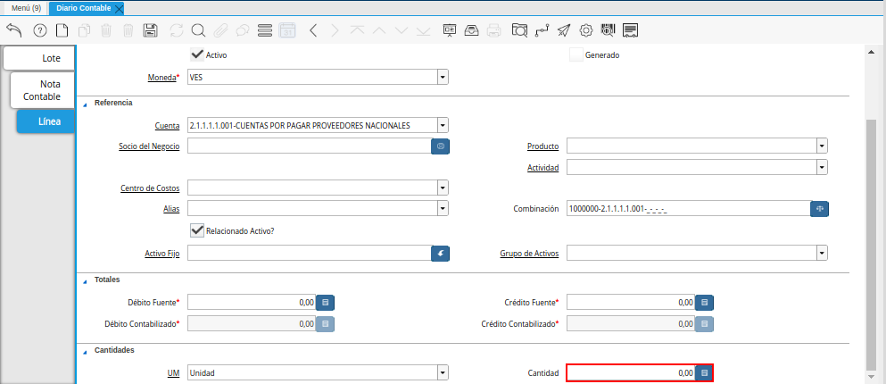

Diario de Nota Contable¶
Ubique y seleccione en el menú de ADempiere, la carpeta “Análisis de Desempeño”, luego seleccione la ventana “Diario Contable”.
Imagen 1. Menú de ADempiere

Podrá visualizar la siguiente ventana.

Lote Contable¶
Seleccione el icono “Registro Nuevo”, para crear un nuevo registro de diario contable en ADempiere.
Imagen 3. Icono Registro Nuevo de la Pestaña Lote Contable de la Ventana Diario Contable
Seleccione la organización en el campo “Organización”.
La organización es un campo obligatorio, le permite determinar, a que organización corresponde el lote contable, para dimensionar o clasificar el asiento contable por organización, para profundizar más este tema vaya a el documento: Dimensiones Contables.
Imagen 4. Campo Organización de la Pestaña Lote Contable de la Ventana Diario Contable
Introduzca una descripción clara en el campo “Descripción”.
La descripción es un campo obligatorio, le ayudará a determinar en reportes detallados el motivo o justificación por el cual existe el asiento, es por ello que recomendamos definir una descripción clara y precisa del lote contable, ya que la misma será mostrada en reportes de auditorias.
Imagen 5. Campo Descripción de de la Pestaña Lote Contable de la Ventana Diario Contable
Seleccione un tipo de aplicación en el campo “Tipo de Aplicación”.
El tipo de aplicación es un campo obligatorio, le permite clasificar el lote contable por tipo de aplicación, este es establecido actual por defecto, para profundizar más este tema vaya a el documento: Tipo de Aplicación.
Imagen 6. Campo Tipo de Aplicación de la Pestaña Lote Contable de la Ventana Diario Contable
Note
Por defecto ADempiere establece el tipo de aplicación actual.
Seleccione un tipo de documento en el campo “Tipo de Documento”.
El tipo de documento es un campo obligatorio, le permite definir el comportamiento del documento que se está elaborando, para profundizar más este tema vaya a el documento: Tipo de Documento.
Imagen 7. Campo Tipo de Documento de la Pestaña Lote Contable de la Ventana Diario Contable
Seleccione la categoría de contabilidad en el campo “Categoría Contabilidad”.
La categoría de contabilidad es un campo obligatorio, sin embargo, le permite categorizar los registros para ser filtrados en reportes posteriormente.
Imagen 8. Campo Categoría Contabilidad de la Pestaña Lote Contable de la Ventana Diario Contable
Seleccione la fecha en el campo “F. Documento”.
La fecha de documento es un campo obligatorio, le permite filtrar por rango de fecha los lotes contables realizados.
Imagen 9. Campo Fecha del Documento de la Pestaña Lote Contable de la Ventana Diario Contable
Seleccione la fecha en el campo “Fecha Contable”.
La fecha contable es un campo obligatorio, le permite establecer un límite contable para las notas contables dependientes de este lote contable.
Imagen 10. Campo Fecha Contable de la Pestaña Lote Contable de la Ventana Diario Contable
Seleccione un periodo contable en el campo “Período”.
El periodo es un campo obligatorio, le permite definir el periodo contable al que pertenece el lote contable, además, este periodo es establecido en las notas contable y variará a criterio del usuario de ser necesario, para comprender mejor, veamos el siguiente ejemplo:
Suponemos que es necesario realizar un asiento ajustando la depreciación anual de un activo, para esto se requiere realizar ajustes mes a mes, sin embargo, el lote representa el último periodo de ajuste.
Para este el año fiscal será desde enero a diciembre, se tomaría entonces como periodo contable para el lote el periodo correspondiente a diciembre.
Imagen 11. Campo Período de la Pestaña Lote Contable de la Ventana Diario Contable
Note
Por defecto ADempiere establece el periodo correspondiente a la fecha actual.
Seleccione la moneda en el campo “Moneda”.
La moneda es un campo obligatorio, le permite definir la moneda con la cual se ejecuta el lote contable, recordemos que ADempiere maneja la metodología multi-moneda, de esta forma se podrá realizar lotes de asientos con una moneda diferente a la del esquema principal de la compañía.
Sin embargo, esta moneda es establecida en las notas contables y variará a criterio del usuario de ser necesario, para comprender mejor, veamos el siguiente ejemplo:
Suponemos que es necesario realizar un asiento ajustando la depreciación anual de un activo, para esto se requiere realizar ajustes en moneda USD, aún cuando la moneda base del esquema es VES.
En pro de mantener la integridad del balance, ADempiere ejecuta la conversión en la contabilidad a la moneda del esquema principal basados en la tasa de cambio correspondiente a la fecha de este documento.
Imagen 12. Campo Moneda de la Pestaña Lote Contable de la Ventana Diario Contable
Note
Por defecto ADempiere establece la moneda del esquema principal de la compañía actual.
Introduzca un monto en el campo “Cifra de Control”.
La cifra control no es un campo obligatorio, sin embargo le permite validar que el monto total del débitos acumulados en las notas contables sea igual a la cifra control, evitando que el documento sea completado.
Imagen 13. Campo Cifra de Control de la Pestaña Lote Contable de la Ventana Diario Contable
Podrá visualizar el checklist “Aprobado”.
El check aprobado es un campo solo lectura, actualizado automáticamente si es activado un flujo de aprobación para este documento, de esta forma es obligatorio que el documento sea aprobado por un supervisor.
Imagen 14. Checklist Aprobado de la Pestaña Lote Contable de la Ventana Diario Contable
Podrá visualizar el total de débito en el campo “Total Débito”.
El total de débito es un campo solo lectura, actualizado automáticamente, acumulando el saldo deudor de las notas contables que componen el lote.
Imagen 15. Campo Total Débito de la Pestaña Lote Contable de la Ventana Diario Contable
Podrá visualizar en el campo “Total Débito”, el total del débito correspondiente a la nota contable.
El total de crédito es un campo solo lectura, actualizado automáticamente, acumulando el saldo acreedor de las notas contables que componen el lote.
Imagen 16. Campo Total Crédito de la Pestaña Lote Contable de la Ventana Diario Contable


Note
Recuerde guardar el registro de los campos con ayuda del icono “Guardar Cambios”, ubicado en la barra de herramientas de ADempiere.
Pasos posterior al registro de la Nota Contable y Linea
Regrese a la pestaña principal “Lote” y seleccione la opción “Completar”, ubicado en la parte inferior derecha de la ventana.
Imagen 51. Pestaña Lote y Opción Completar
Seleccione la acción “Completar” y la opción “OK” para completar el documento “Nota de Contabilidad”.

Imagen 52. Acción Completar y Opción OK
Podrá visualizar que el documento pasa de estado “Borrador” a estado “Completo”, en el campo “Estado del Documento”
Imagen 53. Estado del Documento Nota Contable


Note
¡Recuerde!
Para ADempiere, un documento que no se encuentre en estado “Completo”, es un documento “No Válido”, posterior a ser completado este documento podrá ser reactivado mientras el periodo contable esté activo.
Nota Contable¶
Seleccione la pestaña “Nota Contable” y proceda al llenado de los campos correspondientes para especificar una descripción para cada movimiento.

Imagen 17. Pestaña Nota Contable de la Ventana Diario Contable
Introduzca una descripción clara en el campo “Descripción”.
La descripción es un campo obligatorio, que le ayudará a determinar en reportes detallados el motivo o justificación por el cual existe el asiento, es por ello que recomendamos definir una descripción clara y precisa de la nota contable, ya que la misma será mostrada en reportes de auditorias.
Imagen 18. Campo Descripción de la Pestaña Nota Contable de la Ventana Diario Contable
Seleccione en el campo “Tipo de Aplicación”, el tipo de aplicación correspondiente a la nota contable que está realizando.
El tipo de aplicación es un campo obligatorio, le permite clasificar la nota contable por tipo de aplicación, este es establecido inicialmente desde el valor seleccionado en la pestaña lote contable, y puede ser modificado si difiere del mismo, para profundizar más este tema vaya a el documento: Tipo de Aplicación.
Imagen 19. Campo Tipo de Aplicación de la Pestaña Nota Contable de la Ventana Diario Contable
Seleccione el tipo de documento en el campo “Tipo de Documento”.
El tipo de documento es un campo obligatorio, le permite definir el comportamiento del documento que se está elaborando, este es establecido inicialmente desde el valor seleccionado en la pestaña lote contable, y puede ser modificado si difiere del mismo, para profundizar más este tema vaya a el documento: Tipo de Documento.
Imagen 20. Campo Tipo de Documento de la Pestaña Nota Contable de la Ventana Diario Contable
Seleccione la categoría de contabilidad en el campo “Categoría Contabilidad”.
La categoría de contabilidad es un campo obligatorio, sin embargo, le permite categorizar los registros para ser filtrados en reportes posteriormente, este es establecido inicialmente desde el valor seleccionado en la pestaña lote contable, y puede ser modificado si difiere del mismo.
Imagen 21. Campo Categoría Contabilidad de la Pestaña Nota Contable de la Ventana Diario Contable
Seleccione la fecha en el campo “F. Documento”.
La fecha de documento es un campo obligatorio, le permite filtrar por rango de fecha las notas contables realizadas, esta es establecido inicialmente desde el valor seleccionado en la pestaña lote contable, y puede ser modificado si difiere del mismo.

Imagen 22. Campo Fecha del Documento de la Pestaña Nota Contable de la Ventana Diario Contable
Seleccione la fecha en el campo “Fecha Contable”.
La fecha contable es un campo obligatorio, le permite establecer la fecha con la cual será contabilizada la nota contable, esta es establecido inicialmente desde el valor seleccionado en la pestaña lote contable, y puede ser modificado si difiere del mismo.
Imagen 23. Campo Fecha Contable de la Pestaña Nota Contable de la Ventana Diario Contable
Seleccione un periodo contable en el campo “Período”.
El período es un campo obligatorio, le permite definir el periodo contable al que pertenece la nota contable, este es establecido inicialmente desde el valor seleccionado en la pestaña lote contable, y puede ser modificado si difiere del mismo.
Imagen 24. Campo Período de la Pestaña Nota Contable de la Ventana Diario Contable
Seleccione la moneda en el campo “Moneda”.
La moneda es un campo obligatorio, le permite definir la moneda con la cual se ejecuta la nota contable, recordemos que ADempiere maneja la metodología multi-moneda, de esta forma se podrá realizar lotes de asientos con una moneda diferente a la del esquema principal de la compañía.
En pro de mantener la integridad del balance, ADempiere ejecuta la conversión en la contabilidad a la moneda del esquema principal basados en la tasa de cambio correspondiente a la fecha de este documento, esta es establecido inicialmente desde el valor seleccionado en la pestaña lote contable, y puede ser modificado si difiere del mismo.
Imagen 25. Campo Moneda de la Pestaña Nota Contable de la Ventana Diario Contable
Introduzca un monto en el campo “Cifra de Control”.
La cifra control no es un campo obligatorio, sin embargo le permite validar que el monto total del débitos acumulados en las líneas de la nota sea igual a la cifra control, evitando que el documento sea completado, este es establecido inicialmente desde el valor seleccionado en la pestaña lote contable, y puede ser modificado si difiere del mismo.
Imagen 26. Campo Cifra de Control de la Pestaña Nota Contable de la Ventana Diario Contable
Podrá visualizar el checklist “Aprobado”.
El check aprobado es un campo solo lectura, actualizado automáticamente si es activado un flujo de aprobación para este documento, de esta forma es obligatorio que el documento sea aprobado por un supervisor, este es establecido desde el valor seleccionado en la pestaña lote contable.
Imagen 27. Checklist Aprobado de la Pestaña Nota Contable de la Ventana Diario Contable
Podrá visualizar el total de débito en el campo “Total Débito”.
El total de débito es un campo solo lectura, actualizado automáticamente, acumulando el saldo deudor de las líneas que componen la nota contable.
Imagen 28. Campo Total Débito de la Pestaña Nota Contable de la Ventana Diario Contable
Podrá visualizar en el campo “Total Débito”, el total del débito correspondiente a la nota contable.
El total de crédito es un campo solo lectura, actualizado automáticamente, acumulando el saldo acreedor de las líneas que componen la nota contable.
Imagen 29. Campo Total Crédito de la Pestaña Nota Contable de la Ventana Diario Contable


Note
Recuerde guardar el registro de los campos con ayuda del icono “Guardar Cambios”, ubicado en la barra de herramientas de ADempiere.
Línea¶
Seleccione la pestaña “Línea” y proceda al llenado de los campos correspondientes para definir cada uno de los movimientos.
Imagen 30. Pestaña Línea de la Ventana Diario Contable
Introduzca una descripción clara en el campo “Descripción”.
La descripción es un campo obligatorio, le ayudará a determinar en reportes detallados el motivo o justificación por el cual se realiza el asiento.
Imagen 31. Campo Descripción de la Pestaña Línea de la Ventana Diario Contable
Podrá visualizar el checklist “Generado”.
El checklist generado es un campo solo lectura, actualizado automáticamente si esta línea de la nota es generada posterior a la ejecución de un proceso de ADempiere.
Imagen 32. Checklist Generado de la Pestaña Línea de la Ventana Diario Contable
Seleccione la moneda en el campo “Moneda”.
La moneda es un campo obligatorio, le permite definir la moneda con la cual se ejecuta el asiento, recordemos que ADempiere maneja la metodología multi-moneda, de esta forma se podrá realizar lotes de asientos con una moneda diferente a la del esquema principal de la compañía, esta es establecida inicialmente desde el valor seleccionado en la pestaña nota contable, y puede ser modificado si difiere del mismo.
Imagen 33. Campo Moneda de la Pestaña Línea de la Ventana Diario Contable
Seleccione la cuenta en el campo “Cuenta”.
La cuenta es un campo obligatorio, le permite definir la cuenta contable en la cual abona o carga el saldo, recordando que una cuenta es utilizada para aplicar o un débito o un crédito a la vez.
Esta cuenta tiene incidencias en el campo combinación contable, cuando es guardado el registro establece la Combinación Contable de forma automática.
Imagen 34. Campo Cuenta de la Pestaña Línea de la Ventana Diario Contable
Note
¡Recuerde!
Debe realizar este procedimiento por cada débito o crédito que desee aplicar a cada cuenta.
Seleccione el socio de negocio en el campo “Socio del Negocio”.
El socio de negocio no es un campo obligatorio, sin embargo, le permite definir un proveedor, cliente o cualquier otra entidad que funge como dimensión contable en su asiento, para profundizar más este tema vaya a el documento: Dimensiones Contables.
Imagen 35. Campo Socio del Negocio de la Pestaña Línea de la Ventana Diario Contable
Note
¡Recuerde!
El socio de negocio debe estar registrado previamente en ADempiere.
Seleccione en el campo “Producto”, el producto correspondiente al registro que está realizando.
El producto no es un campo obligatorio, sin embargo, le permite definir un producto o servicio que funge como dimensión contable en su asiento, para profundizar más este tema vaya a el documento: Dimensiones Contables.

Imagen 36. Campo Producto de la Pestaña Línea de la Ventana Diario Contable
Note
¡Recuerde!
El producto debe estar registrado previamente en ADempiere.
Seleccione la actividad ABC en el campo “Actividad”.
La actividad no es un campo obligatorio, sin embargo, le permite definir una actividad ABC que funge como dimensión contable en su asiento, para profundizar más este tema vaya a el documento: Dimensiones Contables.
Imagen 37. Campo Actividad de la Pestaña Línea de la Ventana Diario Contable
Note
¡Recuerde!
La actividad ABC debe estar registrada previamente en ADempiere.
Seleccione el centro de costo en el campo “Centro de Costos”.
El centro de costo no es un campo obligatorio, sin embargo, le permite definir un centro de costo que funge como dimensión contable en su asiento, para profundizar más este tema vaya a el documento: Dimensiones Contables.
Imagen 38. Campo Centro de Costos de la Pestaña Línea de la Ventana Diario Contable
Note
¡Recuerde!
El centro de costo debe estar registrado previamente en ADempiere.
Seleccione un alias de una combinación contable en el campo “Alias”.
El alias no es un campo obligatorio, sin embargo, le permite seleccionar un alias asociado a una combinación contable, para establecer la combinación en el campo combinación contable, para profundizar más este tema vaya a el documento: Combinación Contable.
Imagen 39. Campo Alias de la Pestaña Línea de la Ventana Diario Contable
Note
¡Recuerde!
La combinación debe estar registrada previamente en ADempiere.
Seleccione la combinación contable en el campo “Combinación”.
La combinación no es un campo obligatorio, sin embargo, le permite crear una nueva combinación contable o seleccionar una nueva, recordando que este campo es actualizado automáticamente, al establecer el campo cuenta contable o un alias explicados previamente, para profundizar más este tema vaya a el documento: Combinación Contable.
Imagen 41. Combinación Contable del Campo Combinación de la Pestaña Línea de la Ventana Diario Contable
Si desea crear o modificar la combinación establecida, realice el procedimiento regular para configurar una combinación contable, el mismo se encuentra explicado en el documento Combinación Contable elaborado por ERPyA.
Imagen 40. Identificador del Campo Combinación de la Pestaña Línea de la Ventana Diario Contable
Seleccione el checklist “Relacionado Activo”, para indicar que el registro se encuentra relacionado a un activo.
El checklist relacionado activo no es un campo obligatorio, sin embargo, le permite definir la relación del asiento realizado con un activo fijo o un grupo de activo, es decir este asiento altera el valor de su activo fijo mediante una depreciación o una revalorización quizás por un API.
Imagen 42. Checklist Relacionado Activo de la Pestaña Línea de la Ventana Diario Contable
Al seleccionar este checklist se activarán los siguientes campos para dar paso a que usted puede realizar la relación:
Seleccione el activo fijo en el campo “Activo Fijo”.
El activo fijo no es un campo obligatorio, sin embargo, le permite establecer el activo fijo al cual desea alterar su valorización.
Imagen 43. Campo Activo Fijo de la Pestaña Línea de la Ventana Diario Contable
Seleccione el grupo de activo en el campo “Grupo de Activos”.
El grupo de activo fijo no es un campo obligatorio, sin embargo, le permite establecer un grupo de activo fijo en caso de querer distribuir entre todos los activos relacionados a este grupo la depreciación o revalorización del asiento.
Imagen 44. Campo Grupo de Activos de la Pestaña Línea de la Ventana Diario Contable
Ingrese el monto del débito en el campo “Débito Fuente”.
El débito fuente es un campo obligatorio, establecido por defecto con monto 0, sin embargo usted podrá modificarlo e ingresar el monto correspondiente al débito si el registro que efectúa corresponde a un cargo en la cuenta, de otro modo podrá omitir este campo y colocar el monto en el crédito.
Este campo tiene incidencias en el campo débito contabilizado, establece automáticamente la cifra ingresada en el débito fuente.
Imagen 45. Campo Débito Fuente de la Pestaña Línea de la Ventana Diario Contable
Ingrese el monto del crédito en el campo “Crédito Fuente”.
El crédito fuente es un campo obligatorio, establecido por defecto con monto 0, sin embargo usted podrá modificarlo e ingresar el monto correspondiente al crédito si el registro que efectúa corresponde a un abono en la cuenta, de otro modo podrá omitir este campo y colocar el monto en el débito.
Este campo tiene incidencias en el campo crédito contabilizado, establece automáticamente la cifra ingresada en el crédito fuente.
Imagen 46. Campo Crédito Fuente de la Pestaña Línea de la Ventana Diario Contable
Podrá visualizar el total de débito en el campo “Débito Contabilizado”.
El débito contabilizado es un campo solo lectura, actualizado automáticamente, al establecer el monto del débito fuente, este monto es acumulado en el campo -total débitos en la pestaña nota contable.
Imagen 47. Campo Débito Contabilizado de la Pestaña Línea de la Ventana Diario Contable
Podrá visualizar el total de crédito en el campo “Crédito Contabilizado”.
El crédito contabilizado es un campo solo lectura, actualizado automáticamente, al establecer el monto del crédito fuente, este monto es acumulado en el campo -total créditos en la pestaña nota contable.
Imagen 48. Campo Crédito Contabilizado de la Pestaña Línea de la Ventana Diario Contable
Seleccione la unidad de medida en el campo “UM”.
La unidad de medida no es un campo obligatorio, sin embargo es utilizada para contabilizar cuentas de orden, utilizadas para registrar transacciones y valores contingentes que sirven para controlar los resultados de ciertas operaciones, estas cuentas no afectarán su balance, para comprenderlo mejor veamos el siguiente ejemplo:
Imaginemos una empresa que maneja inventario en consignación, para conocer su cuantia es necesario manejar una cuenta que no altere la totalidad de la cuenta de activos, esto por no ser un inventario perteneciente a la empresa.
En tal sentido se contabiliza las cantidades del inventario en cuentas de orden, para mantener el control de la mercancia y a su vez reconocer el valor ajeno, sin alterar el balance.
Imagen 49. Campo UM de la Pestaña Línea de la Ventana Diario Contable
Ingrese la cantidad en el campo “Cantidad”.
La cantidad no es un campo obligatorio, sin embargo es utilizada para ingresar la cantidad cuentas de orden, utilizadas para registrar transacciones y valores contingentes que sirven para controlar los resultados de ciertas operaciones.

Imagen 50. Campo Cantidad de la Pestaña Línea de la Ventana Diario Contable


Note
Recuerde guardar el registro de los campos con ayuda del icono “Guardar Cambios”, ubicado en la barra de herramientas de ADempiere.